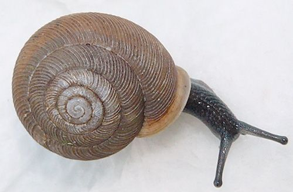
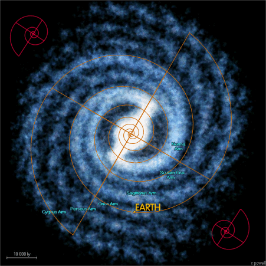
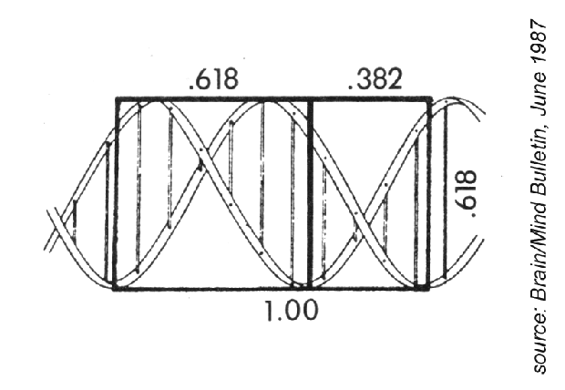

<pre>
William Phillips @ Charlie
10.183.2.3
sanguineskralx@gmail.com

"The spiral in a snail's shell is the same mathematically
 as the spiral in the Milky Way galaxy, and it's also the
  same mathematically as the spirals in our DNA. It's the
   same ratio that you'll find in very basic music that 
   transcends cultures all over the world.
   
			Joseph Gordon-Levitt

</pre>




